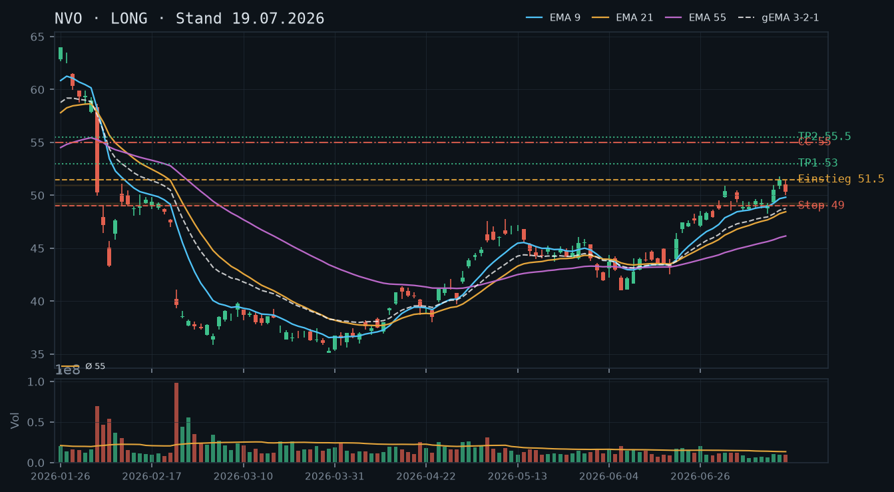
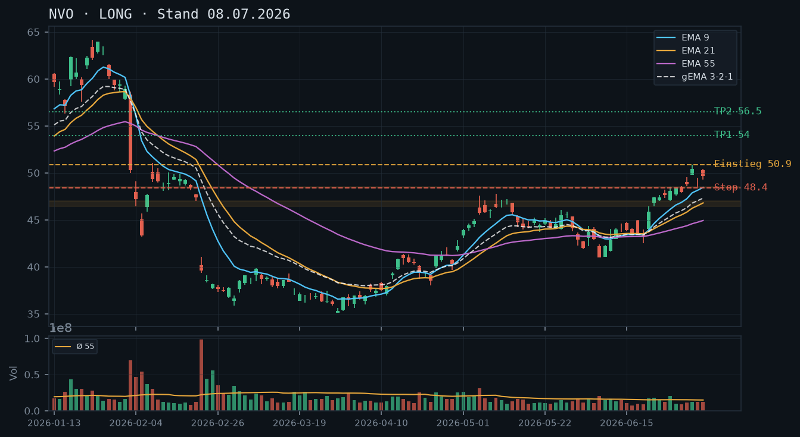

NVO hält den Aufwärtstrend intakt und testet nach dem erfolgreichen Ausbruch über 50.90 nun das nächste Ziel bei ~55 – der Covered-Call-Fokus ist angesichts des Aktienbestands das primäre Stillhalter-Instrument.

NVO befindet sich in einem intakten, mehrstufigen Aufwärtstrend seit dem Tief bei ~35.13 (30. März). Die Trendstruktur zeigt eine Abfolge höherer Hochs und höherer Tiefs: 36.82 → 42.86 → 48.50 → 51.77 (16. Juli, neues Swing-Hoch). Das Swing-Hoch aus der Analyse vom 08.07. bei ~50.90 wurde am 15./16. Juli mit Schlusskursen von 50.56 bzw. 51.48 klar gebrochen. Der letzte Schlusskurs (17. Juli) bei 50.32 zeigt einen leichten Rücksetzer nach dem Ausbruch – ein normales Pullback-Verhalten. Primärer Support liegt im Bereich 49.00–49.30 (mehrfach getestet in KW28/29), sekundärer Support bei 47.60–48.00.
Die Kerze vom 16. Juli ist eine starke Bullish-Marubozu-artige Kerze (Open 50.91, High 51.77, Close 51.48) mit engem Schatten – klares Kaufsignal nach dem Ausbruch über 50.90. Die Folgekerze vom 17. Juli (Open 51.06, High 51.40, Low 50.00, Close 50.32) ist ein sogenannter Bearish Inside Day oder Shooting-Star-Kandidat: Der Kurs eröffnet nahe dem Hoch und schließt tiefer, was kurzfristigen Verkaufsdruck signalisiert. Der Schatten nach unten bis 50.00 – ein runder psychologischer Level – wurde gehalten. Kein Trendumkehrsignal, aber ein Warnsignal für kurzfristige Schwäche.
Die EMA-Konstellation ist klar bullisch: EMA9 (49.82) > EMA21 (48.45) > EMA55 (46.16), gema_321 bei 48.75 – alle steigend, Reihenfolge intakt. Der Kurs (50.32) notiert oberhalb aller drei EMAs mit komfortablem Abstand. EMA9 hat EMA21 bereits Anfang Juli gekreuzt (Golden Cross im kurzen Fenster) und läuft nun parallel nach oben. Der gema_321 bei 48.75 fungiert als dynamische Support-Zone beim nächsten Pullback.
| Richtung | Long |
| Einstieg | 51.50 (Stop-Buy über Hoch vom 16. Juli / Ausbruchsniveau) |
| Stop | 49.00 (unter dem getesteten Support-Cluster 49.00–49.30) |
| Ziel | 55.50 |
| CRV | 2.1 : 1 |
Mit 400 Aktien im Bestand ist ein Covered Call das passgenaue Instrument – der Bestand deckt 4 Kontrakte vollständig. Ein CSP wäre technisch zwar möglich, widerspricht aber der Long-Positionierung und dem intakten Aufwärtstrend; daher kein CSP empfohlen. Der CC soll oberhalb des nächsten nennenswerten Widerstands platziert werden und profitiert von der Konsolidierungsphase nach dem Ausbruch.
| Geschäft | Covered Call |
| Strike | 55.0 |
| Puffer | 6.7 % |
| Zone | oberhalb des Projektionsziels ~55 / runder Widerstand; kein struktureller Widerstand durch mehrfache Tests bestätigt, aber charttechnisches Kursziel der Ausbruchs-Bewegung |
| Verfall bis | 2026-07-25 (6 Tage) |
| Begründung | Ein CC mit Strike 55.00 liegt 6.7% über dem aktuellen Kurs (50.32 Schlusskurs 17.07.) und damit deutlich oberhalb des Ausbruchsniveaus 50.90 sowie des nächsten runden Widerstands bei 52.50–53.00. Der Strike 55.00 entspricht dem Kursziel der Bewegung – eine Andienung (Abgabe der Aktien zu 55.00) wäre fundamental und technisch akzeptabel und würde die Position profitabel schließen. Prüfe in der Optionskette: Liegt die Prämie im Verhältnis zum Puffer noch bei vertretbaren Werten (grob 0.20–0.40 bei dieser IV-Lage zu erwarten)? Delta sollte deutlich unter 0.20 liegen. Liquidität und Spread im 55er-Strike der Juli-Wochenserie prüfen. |
Bestand: Aktienbestand vorhanden (Long-Position). Ein Covered Call auf Basis dieses Bestands ist möglich und sinnvoll – der Bestand deckt mehrere Kontrakte. Keine bestehenden Short-Optionen laut IBKR-Snapshot. Sollte der Kurs die 55.00 vor Verfall erreichen, entweder rollen (Roll Up & Out auf nächsten Verfall und/oder höheren Strike, z.B. 57.50 für 01.08.) oder Andienung akzeptieren. Roll-Trigger: Kurs steigt über 53.50 mit mehr als 2 Tagen Restlaufzeit → Roll prüfen.
Die Analyse vom 08.07. war klar LONG mit Einstieg bei 50.90 (Stop-Buy über das Swing-Hoch). Dieses Setup hat funktioniert: Am 15. Juli wurde das Level 50.90 intraday überschritten (High 51.00, Close 50.56), und am 16. Juli erfolgte der bestätigte Schlusskurs-Ausbruch bei 51.48 – neues Swing-Hoch bei 51.77. Das Ziel 55.50 ist noch nicht erreicht. Die Aussage der Voranalyse wird damit vollständig bestätigt. Stop bei 48.40 wurde zu keiner Zeit getestet; das Tief der Konsolidierung lag bei 48.29 (14. Juli) und hielt damit gerade so. Wer den Stop eng bei 48.40 hatte, wurde möglicherweise knapp ausgestoppt – dieses Level sollte für neue Setups als kritische Zone im Blick bleiben.
Der übergeordnete Trend ist aufwärts gerichtet seit dem Mehrjahrestief bei ~35.13 (30. März 2026). Die wichtigen strukturellen Stufen im Aufstieg:
Der Rücksetzer am 17. Juli (Close 50.32) ist nach einem Ausbruch normal – ein Pullback in die Zone 50.00–50.90 wäre technisch gesund und würde erst dann zur Warnung, wenn 49.00 unterschritten wird.
Die letzten vier Kerzen zeigen ein klassisches Ausbruchs-Pullback-Muster:
Zusammenfassung: Kurzfristig leichter Verkaufsdruck nach dem Ausbruch – kein Trendumkehrsignal, aber kein Setup für aggressive Käufe in der Eröffnung am 19. Juli ohne erneuten Anstieg über 51.50.
EMA-Reihenfolge: EMA9 49.82 > EMA21 48.45 > EMA55 46.16, gema_321 = 48.75. Alle EMAs steigen dynamisch, die Abstände zwischen ihnen weiten sich – das ist das klassische Bild einer beschleunigenden Aufwärtsbewegung. Der Kurs (50.32) notiert ~0.50 Punkte über EMA9, was moderate Überdehnung anzeigt. Bei einem Pullback wäre EMA9 (~49.85 bei Trendfortsetzung) die erste Anlaufstelle, gefolgt von gema_321 (~48.80). EMA21 bei 48.45 entspricht dem unteren Ende der Konsolidierungszone – ein Test dieses Levels wäre das Maximum eines gesunden Pullbacks im Aufwärtstrend.
Setup A – Momentum-Long über dem Ausbruchs-Hoch (bevorzugtes Setup):
Setup B – Pullback-Long an EMA9/50.00-Support:
Setup C – Kein Trade: Falls der Kurs unter 49.00 schließt (Invaliedierung der Trendstruktur), wäre eine neutrale Haltung angebracht bis Klärung.
Der Snapshot (12:08 Uhr, 19.07.2026) zeigt 400 Aktien im Bestand, keine laufenden Short-Optionen. Der aktuelle Kurs zum Snapshot-Zeitpunkt: 51.48 (identisch mit Schlusskurs 16. Juli – möglicherweise Pre-Market oder verzögerter Kurs). Die Analyse basiert auf dem Schlusskurs 17. Juli (50.32) als letztem bestätigten OHLCV-Datenpunkt.
Ein Cash-Secured Put würde implizit eine Bereitschaft zum Kauf weiterer Aktien unter aktuellem Niveau signalisieren. Angesichts des bereits vorhandenen Aktienbestands und des intakten Aufwärtstrends ist das zwar nicht per se falsch, aber die Verkettungs-Logik warnt: Ein CSP mit Strike nahe dem EMA9-Support (~49.50–50.00) würde genau in die Zone fallen, die als Pullback-Einstieg dient – das ist inkonsistent, weil der CSP den Rücksetzer monetarisieren würde, den Setup B (Pullback-Long) als Chance definiert. Daher: CSP auf null gesetzt, Fokus auf CC.
Strike-Herleitung: Der nächste bestätigte Widerstand liegt am Swing-Hoch 51.77 (16. Juli). Darüber ist die Luft technisch dünn bis zum runden Level 52.50 und dann dem Kursziel 55.00. Ein CC-Strike bei 55.00 bietet:
Verfall: 25. Juli 2026 (Freitag, 6 Tage Restlaufzeit). Das ist die nächste Standard-Options-Expiration und hält sich innerhalb der 12-Tage-Regel.
Was in der Optionskette zu prüfen ist:
Roll-Trigger: Sobald NVO über 53.50 mit mehr als 2 Tagen bis Verfall steigt und der CC-Preis auf das 2–3-fache der vereinnahmten Prämie angestiegen ist → Roll Up & Out: Strike auf 57.50, Verfall 01.08.2026 (13 Tage – Grenzfall, alternativ 57.50 mit Verfall 25.07. und sofortigem Re-Sell auf 01.08.). Ziel: Partizipation an weiterer Aufwärtsbewegung erhalten, ohne Aktien vorzeitig abzugeben. Falls Kurs bis Verfall unter 51.00 fällt und der CC nahezu wertlos ist (unter 0.02): Frühzeitiger Rückkauf und ggf. Re-Sell auf nächste Woche möglich.
NVO befindet sich in einem intakten Aufwärtstrend mit bullischer EMA-Konstellation und konsolidiert knapp unter dem Swing-Hoch bei ~50.90 – ein Ausbruch bietet ein attraktives Long-Setup.

NVO hat nach dem Tief bei ~35.12 (30. März) eine ausgeprägte Erholungsbewegung gestartet. Die Struktur zeigt steigende Hochs und Tiefs: 35.12 → 44.87 → 42.25 (Korrektur) → 50.895 (aktuelles Hoch am 2. Juli). Der übergeordnete Trend ist klar bullisch. Wichtige Unterstützung liegt bei 47.60–48.00 (letzte Korrektur-Tiefs), darunter bei 46.45–46.50. Widerstand ist das Swing-Hoch bei 50.895.
Die letzten beiden Kerzen (2. und 6./7. Juli) zeigen nach dem starken Aufwärtstag (50.895 Hoch) eine Konsolidierung mit leichtem Pullback auf ~49.26 und anschließender Erholung auf 49.64 – ein gesundes Consolidation-Muster. Kein Hinweis auf Distributionskerzen; die Körper sind moderat, was auf Akkumulation hindeutet.
Die EMA-Konstellation ist klar bullisch: EMA9 (48.45) > EMA21 (46.80) > EMA55 (44.93), und der gema_321 (47.31) steigt stetig an. Der Kurs notiert deutlich über allen drei EMAs. EMA9 agiert als dynamische Unterstützung im laufenden Aufwärtstrend. Das Volumen war an den Ausbruchstagen (22.–26. Juni) mit rel_volumen 1.14–1.32 erhöht, was den Trend bestätigt.
| Richtung | Long |
| Einstieg | 50.90 (Stop-Buy über Swing-Hoch vom 2. Juli) |
| Stop | 48.40 (unter dem lokalen Pullback-Tief vom 6. Juli) |
| Ziel | 55.50 |
| CRV | 2.3 : 1 |
NVO hat nach dem markanten Verkaufsdruck im Februar/März 2026 (Tief bei 35.12 am 30. März) eine nachhaltige Trendumkehr vollzogen. Die Erholungsphase lässt sich in drei Phasen unterteilen:
Wichtige Kursmarken: Unterstützung bei 48.40–48.55 (Pullback-Tiefs 6./7. Juli), 47.60–47.87 (Tiefs 30. Juni/6. Juli-Bereich), 46.45 (Tief 22. Juni = Ausbruchsbasis), 44.93 (EMA55). Widerstand bei 50.895 (Swing-Hoch 2. Juli) und psychologisch 52.00/55.00.
Die letzten fünf Kerzen zeigen ein typisches Ausbruchs-Konsolidierungs-Muster:
Keine Distributionszeichen (keine langen Oberschatten auf hohem Volumen). Das Muster ist konstruktiv für eine Fortsetzung nach oben.
Die EMA-Konstellation ist eindeutig bullisch:
Die Reihenfolge EMA9 > EMA21 > EMA55 ist seit Ende Mai etabliert und zunehmend gespreizt – ein Zeichen für Trendstärke. Der Kurs (49.64) liegt ~1.19 über EMA9, was eine leichte Überdehnung andeutet, aber im Kontext der starken Phase noch im normalen Bereich liegt. Die Konsolidierung der letzten zwei Tage lässt EMA9 aufholen. Das Volumen-Profil zeigt, dass die großen Ausbruchstage (6. Mai: 1.46×, 22. Juni: 1.14×, 23. Juni: 1.17×, 26. Juni: 1.32×) jeweils von erhöhtem Volumen begleitet wurden – institutionelle Partizipation wahrscheinlich.
Einstieg: 50.90 (Stop-Buy über das Hoch vom 2. Juli bei 50.895) – bestätigt den Ausbruch auf neue Hochs.
Stop: 48.40 (knapp unter dem Tief vom 6. Juli bei 48.55, gibt dem Trade Raum für normale Schwankungen ohne EMA9 zu unterschreiten).
Ziel 1: 54.00 (Projektion: 50% der ersten großen Aufwärtsimpulse, psychologischer Widerstand) → CRV: (54.00-50.90)/(50.90-48.40) = 3.10/2.50 = 1.24:1
Ziel 2: 56.50 (100%-Extension des Mai-Aufwärtsimpulses von 41.17 auf 47.55 = +6.38, projiziert ab 48.40) → CRV: (56.50-50.90)/2.50 = 2.24:1
Einstieg: 48.00–48.40 (Rücklauf zur letzten Unterstützungszone und EMA9-Nähe)
Stop: 47.30 (unter dem Tief vom 30. Juni bei 47.87, Puffer zur EMA9-Zone)
Ziel: 52.00–54.00 → CRV: (52.00-48.20)/(48.20-47.30) = 3.80/0.90 = 4.2:1 – attraktiver, aber erfordert Geduld/Limit-Order
Einstieg: 52.10 (Stop-Buy über psychologischen Widerstand 52.00)
Stop: 50.00
Ziel: 57.00 → CRV: (57.00-52.10)/(52.10-50.00) = 4.90/2.10 = 2.33:1
Bevorzugtes Setup: A – bestes Timing, klarer Trigger, CRV vertretbar. Risikomanagement: Positionsgröße so wählen, dass der Stop-Abstand von ~2.50 USD maximal 1–2% des Depots riskiert.